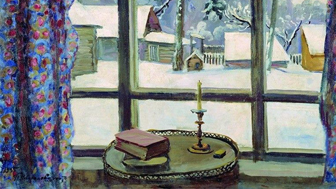

Глаголом жги
-

- 
Для первого литературного цикла культурной платформы “Синхронизация” поэзия выбрана не случайно. Ведь именно поэзия способна наиболее оперативно реагировать на социокультурные изменения, недаром с нее начинались многие течения в искусстве XX века. С другой стороны, поэзия имеет и личное, интимное значение в жизни каждого: колыбельные и потешки - первые литературные произведения, с которыми сталкивается человек, более того, для многих поэзия становится способом творческого самовыражения еще в школе. И это неслучайно, ведь поэзия работает с чувственно-эмоциональной сферой больше, нежели любой другой литературный жанр. В рамках курса мы поговорим об истории развития поэзии, специфике и структуре поэтического текста, взаимодействии поэзии с другими видами искусства, и, конечно же, почитаем стихи.
Список лекций
Лекцию читает
Анна Леонавичус.
Филолог, аспирант РГГУ.
Поэзия vs проза.
АВГ
29
12.00
Библиотека им. И. С. Тургенева
Бобров переулок, д. 6 стр.1
Краткий экскурс, позволяющий понять, как формировался и развивался поэтический жанр.
Что такое поэзия? Чем она отличается от прозы? О ком и о чем пишутся стихи? Как анализировать стихотворение, и зачем это нужно? На лекции попытаемся ответить на эти и другие вопросы, а главное – проанализировать несколько стихотворений русских поэтов XX века и предложить возможные интерпретации их смысла.
Лекцию читает
Светлана Никитина
Пространство и время в поэтическом тексте.
СЕН
05
12.00
Библиотека им. И. С. Тургенева
Бобров переулок, д. 6 стр.1
Поэзия – это особый вид диалога: для участия в нем нужно не только желание, но и навык. На втором занятии мы будем говорить о таких категориях поэтического текста, как время и пространство. Интуитивно понятные каждому, они часто являются ключом к пониманию стихотворения. Разговор будет о двух видах текстов: в одних время и/или пространство – центр поэтического размышления, в других – своего рода скрытый код, открывающий читателю текст с самой неожиданной стороны.
Лекцию читает
Артем Новиченков
Филолог и писатель.
«Тихо сам с собою я веду беседу».
СЕН
12
12.00
Библиотека им. И. С. Тургенева
Бобров переулок, д. 6 стр.1
Как писатели выстраивают поэтический диалог друг с другом? Как поэты читают свои стихи спустя десятилетия и почему они их переписывают? Зачем меняют названия? Разве однажды созданное стихотворение можно "услышать" дважды? Почему некоторые стихи пишутся долгие годы?
Лекцию читает
Лев Оборин
Поэт, переводчик, литературный критик.
Карта современной поэзии.
СЕН
19
12.00
Библиотека им. И. С. Тургенева
Бобров переулок, д. 6 стр.1
Современные русские поэты объединены русским языком, но говорят на самых разных поэтических языках – подчас настолько различных, что исчезает возможность понимать друг друга. Хорошо это или плохо, важно или неважно? Почему так получилось, и приведет ли этот процесс к окончательному распаду или новому синтезу?
Лекцию читает
Анна Толкачева
Медиахудожник, поэт, куратор.
Поэзия в синтезе искусств.
СЕН
26
12.00
Библиотека им. И. С. Тургенева
Бобров переулок, д. 6 стр.1
Как поэзия взаимодействует с другими видами и жанрам искусств.
Литературный текст, будучи оцифрованным, попадает в доступ к художнику, который оперирует им наравне с другими цифровыми медиа, а поэт в поисках мигрирующего зрителя или нового поля смыслов, в свою очередь, заглядывает на территорию визуального. Может ли интерактивная привлекательность при наличии глубины литературных слоев спровоцировать погружение в произведение, проходя уровни смысла словно уровни в компьютерной игре? Будет ли это призывом к упрощению восприятия сложной литературы, или всего лишь маскировкой дополнительного усложнения? Что представляет собой медиапоэзия – синтез двух слишком знакомых сфер или новую синкретичную область искусства, есть ли у нее задачи и цели, можно будет узнать на лекции медиахудожника, поэта, куратора Анны Толкачевой.